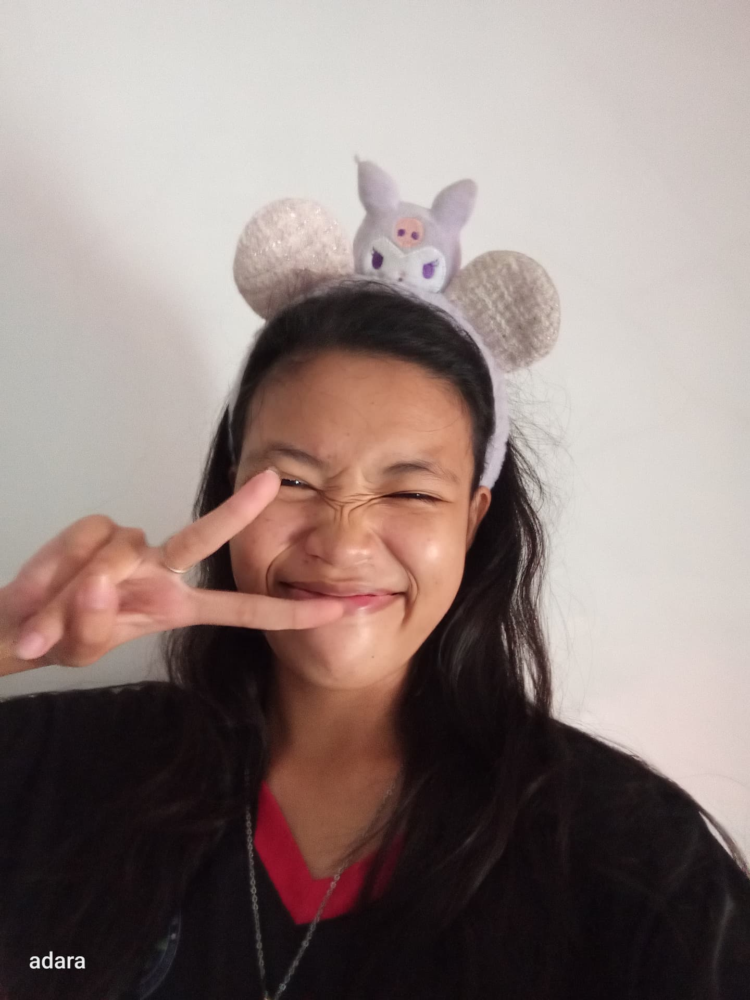
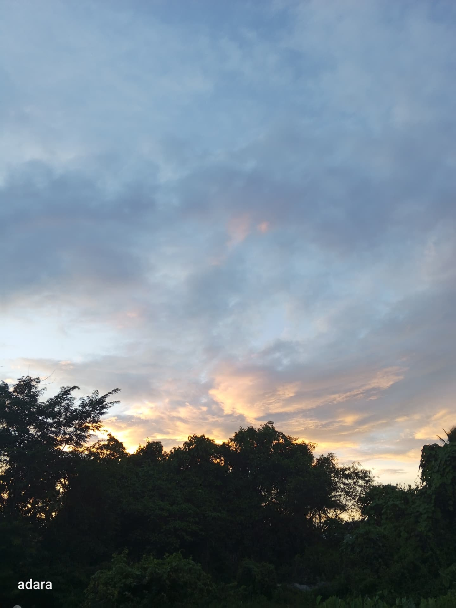
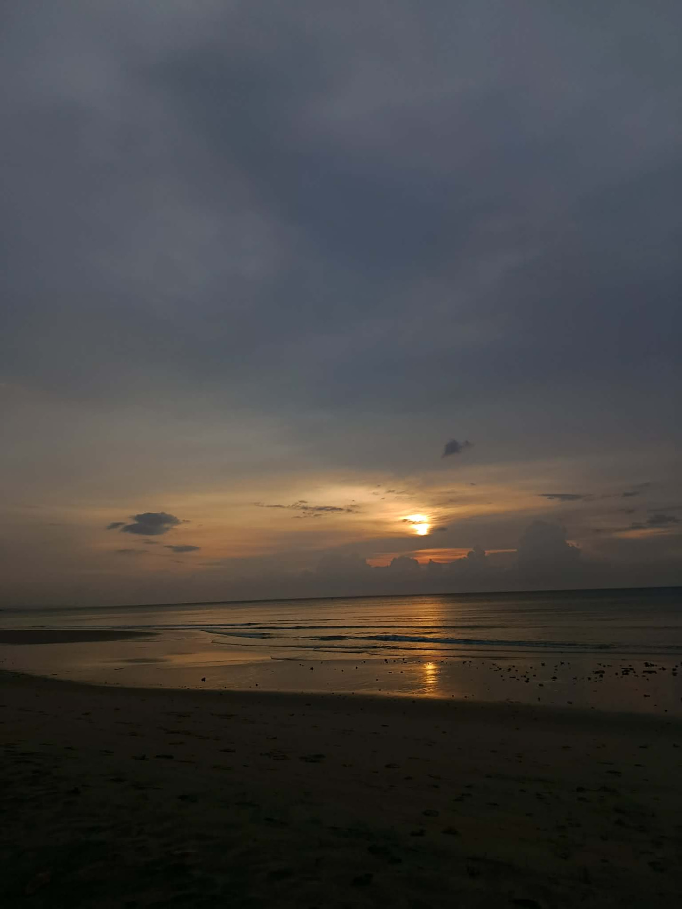
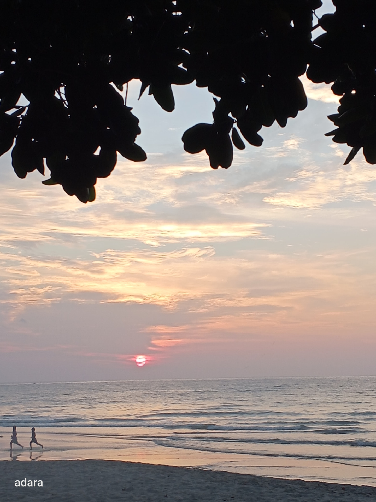
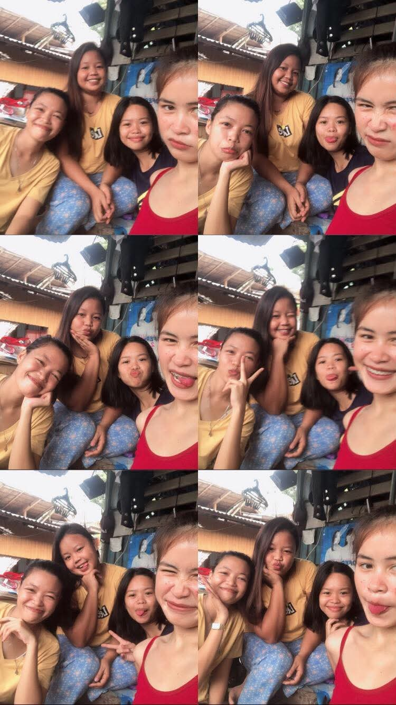
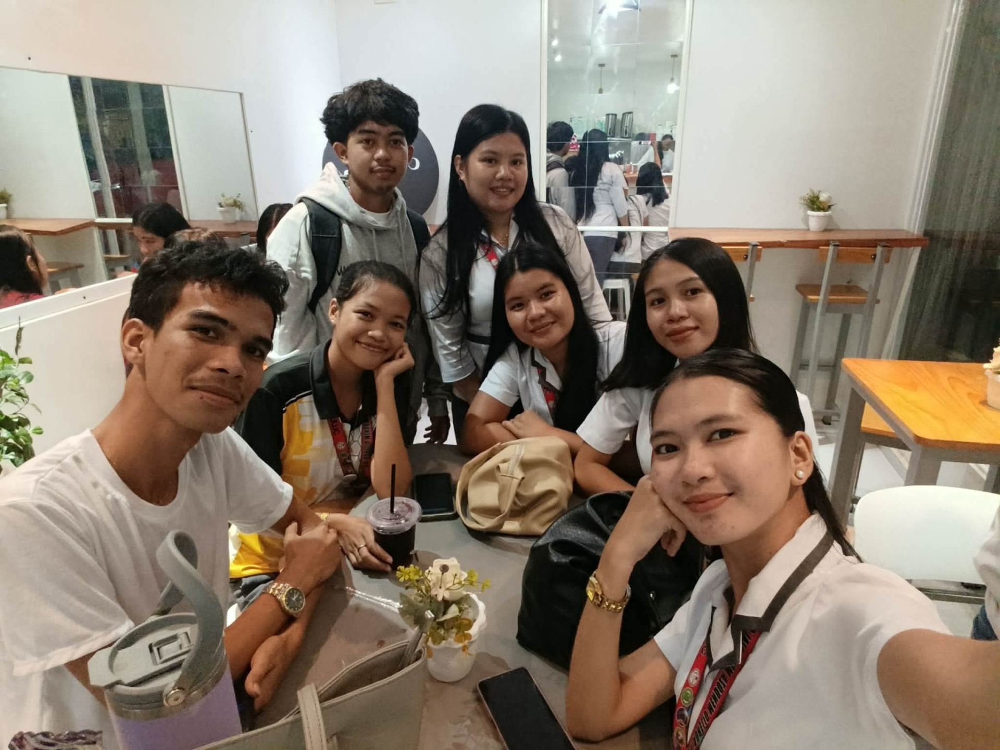
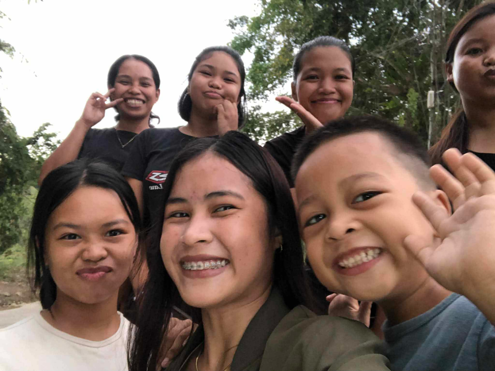
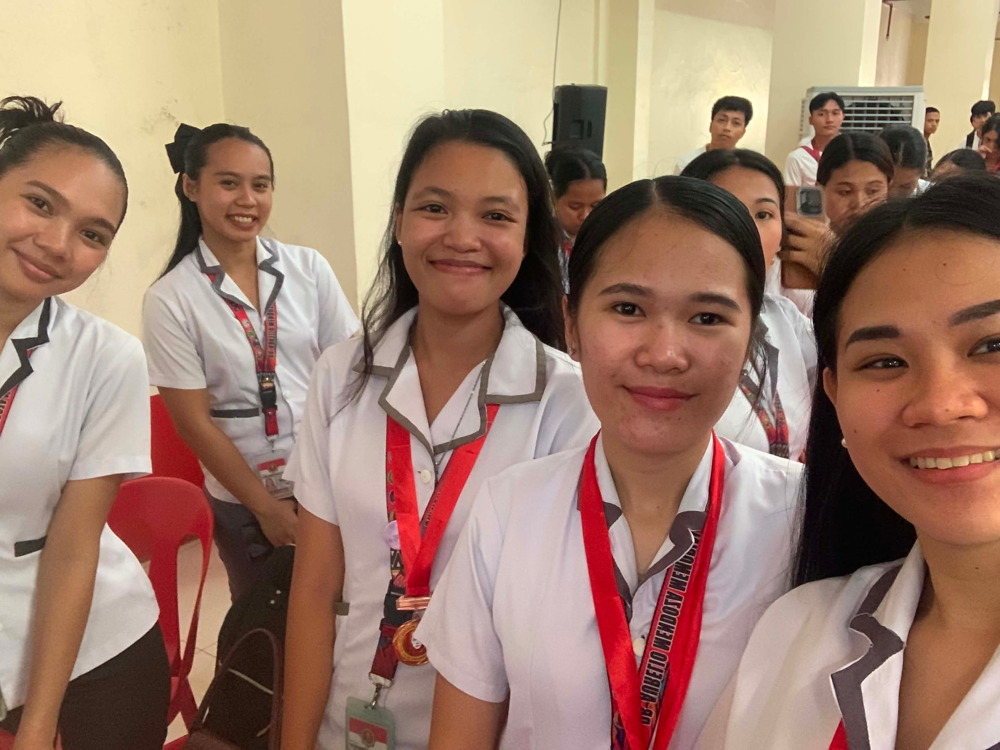
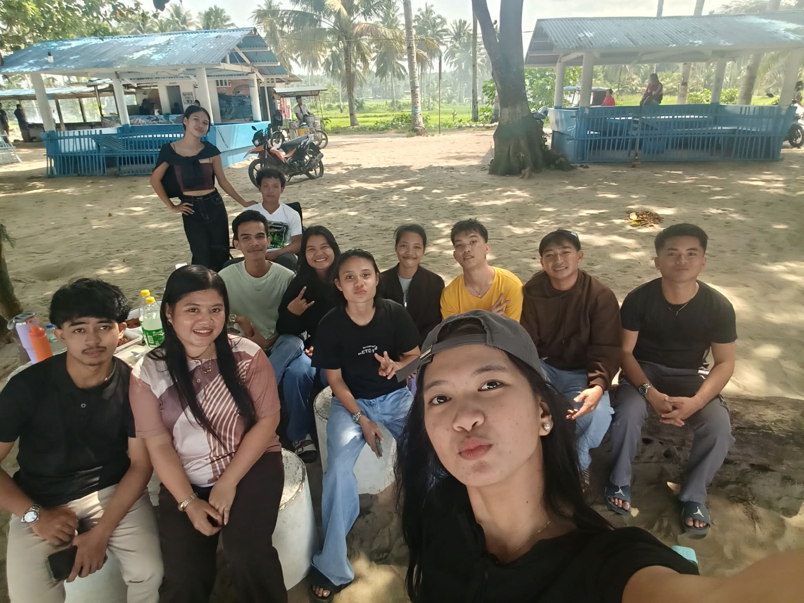

A dreamer
Countless things I want to experience and accomplish.
A student. A dreamer. A little bit of everything.
Welcome to my little corner of the internet — a place where I keep pieces of who I am, the things I love, and the memories I want to remember.
Explore My World ↗— Jeneffyr M. Andales ♡
A little introduction
It’s lovely to have you here.

NameJeneffyr M. Andales
CourseBSBA – Financial Management
Year3rd Year
I’m a third-year BSBA Financial Management student who genuinely enjoys learning. I’ve been an honor student — okay, a bit of an overachiever — since grade school, but there’s so much more to me than grades.
I write poems when feelings are too big to say out loud. I keep music playing for every mood. I get excited when the sky starts changing colors, and I could watch the sea for hours.
Most of all, I treasure memories and the people who make them. This little corner is where I keep all of it.
From: Singkilon, Baga, Naga, Zamboanga Sibugay
Born: January 21, 2005
Countless things I want to experience and accomplish.
Always pushing myself to learn and do my best.
Finding comfort in stories and turning thoughts into words.
Treasuring little moments and the people who make them matter.
The kind of person who stops to watch the sky change colors.
Where I came from
Learning, growing, and becoming — one chapter at a time.
Grade School
Where it all started — an honor student who loved learning and always tried her best.
College
Now a third-year student, learning the world of business and finance one lesson at a time.
Present
Continuing to learn, grow, and discover myself — at my own pace.
What I can do
No percentages here — just honest descriptions of what I bring.
Expressing ideas clearly and working effectively with others.
Doing my part and helping the group move forward together.
Stepping up, staying responsible, and encouraging others.
Keeping tasks, notes, and deadlines in their proper place.
Balancing school, goals, and rest — a lesson from years of overachieving.
Seeing ideas a little differently, the way a writer does.
Breaking challenges into small steps and trying again.
Learning to plan, budget, and understand money through my course.
Asking questions, gathering information, and making sense of it.
Putting thoughts and feelings into words — poems, stories, and reflections.
What inspires me
I get excited when I see the sky changing its hues. Maybe it’s because it reminds me that change can be beautiful.



Who I value
The laughter, the silly moments, the people who stayed, and the places we’ve been.

Friends

Little catch-ups

Family

School Days
Random Moments

Adventures
.jpg)
Sunset Memories
“One day, these ordinary moments will become the memories we wish we could revisit.”
What I love
For the happy days, the sad days, and the staring-at-the-ceiling-thinking-about-life days.
Music that feels like home
Music that feels like comfort, energy, and memories. Their music has become part of different moods, moments, and memories — happy days, sad days, and everything in between.
Songs for every chapter
Her songs tell stories and capture emotions, like reading a story through music. There’s a song for every chapter.
Stories I escape into
Stories have always been one of my favorite ways to escape, imagine, and feel.
Discovering different characters, worlds, relationships, and stories — my favorite escape.
Visit Wattpad ↗The romance, friendships, comedy, and emotional moments. One episode… and suddenly it’s 3 AM. 😭
Explore dramas ↗Another world to explore — adventures that make me laugh, cry, and get attached to fictional people.
Explore anime ↗Poetry corner
A small collection of thoughts, feelings, and words that found their way onto paper.
A little reflection
Maybe some feelings
are meant to be written,
not spoken.
Maybe words can hold
what the heart is still learning
how to say.
— a note from my little corner ♡
Where I’m going
Jeneffyr M. Andales · BSBA – Financial Management · 3rd Year
Honor student since grade school, now a third-year BSBA – Financial Management student.
Discipline, responsibility, perseverance, commitment, and believing in myself.
Communication, teamwork, organization, research, and writing.
Writing poems, reading stories, music, K-Dramas, anime, and the changing sky.
To build a meaningful career, keep improving my skills, and make my family — and my younger self — proud.
“I don’t have to become someone else to become successful.”
I don’t know where life will take me. I’m excited to find out.
If my personality had a color,
🌊 The sea · ☁️ The sky · 🌌 Possibilities · 🕊️ Peace · 💭 Dreams · ✨ Quiet moments
Blue feels calm, but it can also be deep. And somehow, that feels like me.Curious?
Have a question about my studies, achievements, or the things I love? Ask my little helper.
A letter to my future self
Dear Future Me,
I hope you remember the girl who once dreamed about the future while watching the sunset. I hope you remember how hard you worked for the things you wanted — the late nights, the stressful school days, the moments you doubted yourself.
You did it. And if life isn’t exactly what you imagined, I hope you are still proud of yourself.
Keep looking at the sky. Keep loving the sea. Keep reading stories, and keep writing your own. You spent so much time trying to reach the next chapter — don’t forget to live in the chapter you’re in.
With love, your younger self ♡
Every connection is a little story
Whether it’s about school, ideas, collaborations, or simply saying hello, I’d love to hear from you.
Thank you for visiting my little corner of the internet. 💙
Until we meet again, somewhere between the sea and the sky.